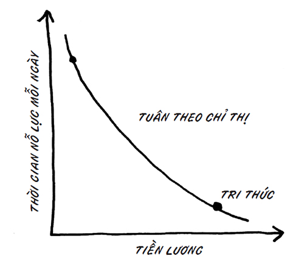
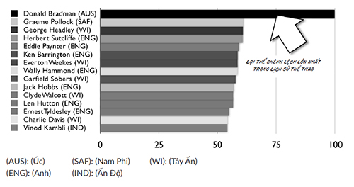
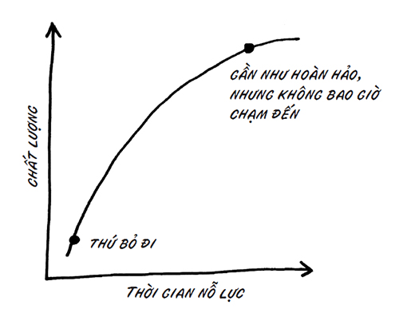

“Nòng cốt – linchpin” là một bộ phận khiêm tốn trong máy móc, thứ mà bạn có thể mua với giá 69 xu tại một cửa hàng ngũ kim gần nhà. Nó không bóng bẩy, nhưng thiết yếu. Nó giữ bánh xe trên xe goòng, và linh kiện trên vật dụng.
Mỗi tổ chức thành công đều có ít nhất một nòng cốt; một số tổ chức có đến hàng tá hoặc hàng nghìn nòng cốt. Nòng cốt là thành tố cốt yếu, gắn kết mọi mảng hoạt động với nhau. Thiếu đi nòng cốt, mọi thứ sẽ sụp đổ.
Có ai trong tổ chức hoàn toàn không thể thay thế được không? Có lẽ là không. Nhưng những nhân sự thiết yếu nhất rất khó thay thế, rất rủi ro nếu để mất họ, và giá trị đến mức họ được xem là không thể thay thế. Toàn bộ các tập đoàn được xây dựng xoay quanh những nòng cốt, hoặc có thể là một nhóm nòng cốt rải rác – tức các cá nhân xứng đáng để được giữ chân.
---❊ ❖ ❊---
Doanh nghiệp của bạn cần thêm nòng cốt. Thật đáng sợ khi phải phụ thuộc vào một nhân viên cụ thể; nhưng trong thời đại hậu công nghiệp, bạn không còn lựa chọn nào khác.
Bạn có khả năng trở thành một nòng cốt. Và nếu thành công, bạn sẽ khám phá ra rằng thật bõ công để làm vậy.
---❊ ❖ ❊---
Những ví dụ về nòng cốt dễ tìm nhất là các CEO và nhà khởi nghiệp, vì họ là những người thu hút toàn bộ truyền thông, điển hình như Steve Jobs của Apple, Jeff Bezos của Amazon, Ben Zander của Boston Philharmonic hay Anne Jackson của flowerdust.net. Chúng ta nhìn những nhà lãnh đạo này và thốt lên: “Tất nhiên, họ là nòng cốt. Tổ chức sẽ không được như thế nếu thiếu họ.”
Nhưng còn người đàn ông tuyệt vời ở sạp bán rau quả thì sao? Bạn biết đấy, đó là người khiến ta cảm thấy đáng có một chuyến đi đặc biệt dạo qua siêu thị (rẻ hơn và tiện hơn). Nếu anh ta bỏ đi, nơi ấy sẽ mất vui và bạn không đi tiếp nữa. Từ tiền thuê gian hàng, kho bãi và đầu tư – tất thảy đều vô giá trị nếu anh ta bỏ đi. Chí ít thì đối với bạn, một khách hàng, anh ta là người không thể thay thế.
Bạn đã bao giờ mua một chiếc xe, sử dụng một dịch vụ tư vấn hay thuê một ngôi nhà chỉ vì người bạn làm việc cùng có mối gắn kết mạnh mẽ với bạn? Nếu đúng thế, thì họ chính là nòng cốt của toàn bộ quy trình. Nếu người ấy bị thay thế bởi một kẻ rập khuôn máy móc nhận lương thấp, bạn sẽ mua hàng từ người khác. Không thể thay thế chính là vậy.
Thế còn cảm giác của bạn khi bước vào một cửa hàng Anthropology, bóc một miếng sô-cô-la Lake Champlain hay gửi bưu phẩm bằng trang web FedEx thì sao? Trải nghiệm đó có thể chỉ bình thường, có thể chỉ vừa đủ tốt. Nhưng không. Nó thật kỳ diệu. Nó được tạo nên từ ai đó quan tâm, đóng góp và làm nhiều hơn những gì họ được bảo – một nòng cốt.
Anthropology có một người chuyên mua hàng, Keith Johnson, đã dành sáu tháng chu du khắp thế giới, ghé thăm các chợ phiên vào dịp thanh lý ga-ra 13 để tìm kiếm những món đồ khác lạ. Có thể không phải để bán mà chỉ để làm đẹp cho cửa hàng. Không dễ thuê được một người như Keith Johnson, lý do chính bởi công việc của anh quá quan trọng đối với thành công của họ.
13
Hình thức bán thanh lý đồ cũ ở Mỹ. Chủ nhà bày bán các món đồ đã qua sử dụng trước nhà hoặc ga-ra để người đi đường đến hỏi mua, trên tinh thần thuận mua vừa bán (hoặc niêm yết giá sẵn). (ND)
Nếu tổ chức của bạn không cản lối, và nếu bạn chịu tiến bước, sẽ luôn có sẵn một suất như thế cho bạn. Cho bất kỳ ai.
Tạo ra chuyển động tiến lên
Hãy hình dung một tổ chức có một nhân viên với khả năng nhìn thấu sự thật, hiểu rõ tình hình và thấu suốt các hệ quả tiềm tàng của những quyết định khác nhau. Và hãy hình dung nhân viên này còn có thể làm điều gì đó ra trò.
Thế quái nào mà ta có thể bắt đầu nghĩ đến khả năng sa thải cô ấy? Thật không thể hiểu nổi!
Mọi doanh nghiệp, tổ chức phi lợi nhuận, đoàn hội chính trị, tập đoàn đều thèm khát tìm kiếm mẫu người này. Đây chính là người lãnh đạo, người quảng bá, nòng cốt của bạn. Cô ấy sẽ tạo ra chuyển động tiến lên.
Những vị sếp có thể khiếp sợ một người có khả năng tạo ra chuyển động tiến lên, nhưng các cổ đông và ông chủ trong hội đồng quản trị của mọi tổ chức trên đời luôn khao khát thèm muốn chuyển động tiến lên. Sự khác biệt này rất nhỏ; do vậy, trấn an sự lo lắng của cấp trên chính là bước đầu tiên để khiến tổ chức đón nhận sự thay đổi mà bạn sắp tạo ra.
Điều quan trọng không phải là bạn có luôn đúng hay không, mà là bạn luôn tiến tới.
Nòng cốt và đòn bẩy
Bạn có thể làm công việc của Richard Branson 14 .
14
Chủ tịch Tập đoàn Virgin Group. (ND)
Xin nói thêm là đa phần bạn sẽ làm được.
Tôi đã dành chút thời gian với Richard Branson, và tôi dám nói rằng bạn có thể làm hầu hết những việc ông ấy làm, thậm chí còn làm tốt hơn. Nhưng ngoại trừ một việc mà ông dành ra khoảng năm phút mỗi ngày. Trong năm phút đó, ông tạo ra lượng giá trị hàng tỷ đô-la ứng với vài năm, mà cả tôi lẫn bạn có cầu trời cũng không làm nổi. Công việc của Branson là nhìn ra các cơ hội mới, đưa ra những quyết định hiệu quả, và hiểu rõ mối gắn kết giữa khách hàng, thương hiệu với các khoản đầu tư mạo hiểm.
Nguyên tắc đòn bẩy nòng cốt: Càng tạo ra nhiều giá trị trong công việc, bạn càng tốn ít thời gian lao động thực sự để tạo ra giá trị đó. Nói cách khác, đa phần bạn không tỏ ra xuất sắc. Đa phần bạn chỉ làm những việc mà người bình thường vẫn làm.
Một tác giả xuất chúng, một nữ doanh nhân, một thượng nghị sĩ hay một kỹ sư phần mềm chỉ xuất sắc trong những khoảnh khắc bùng nổ. Trong thời gian còn lại, họ chỉ làm những việc mà đa số những người được đào tạo vẫn làm.
Có lẽ phải mất nhiều công sức chắp nối công việc cấp thấp hoặc kiến thức nghiệp vụ để khơi dậy sự xuất sắc. Nhưng đối với người ngoài, dường như nghệ thuật là thứ được tạo ra trong khoảnh khắc, chứ không phải qua từng bước tiến nhỏ.
Việc này sẽ khó khăn hơn nếu bạn có một công việc mà ông chủ của bạn không muốn bạn tạo ra quá nhiều giá trị. Trong những công việc này, chỉ có nỗ lực nhàm chán, chăm chỉ và kiên trì tạo ra giá trị. Chuyển một đống gạch từ chỗ này sang chỗ khác tuy quan trọng, nhưng sẽ chẳng ai kỳ vọng bạn thể hiện sự bùng nổ xuất sắc trong việc đó. Sếp bạn sẽ tin rằng đó chỉ là công việc tay chân mà thôi.

Tất nhiên, đống gạch cần được chuyển đi nhưng hãy hiểu rằng bạn không cần là người chuyển chúng, chừng nào bạn còn có thể thuê ai đó nhận lương thấp hơn, dễ thay thế hơn bạn để làm việc này. Và nếu bạn không có lựa chọn nào khác ngoài chuyển đống gạch đi, thì cơ hội cho bạn là hãy suy nghĩ thật kỹ xem bạn sẽ làm thế nào – dù đây chỉ là chuyện vặt; vì ta hầu như có thể nhân tính hóa và biến đổi bất kỳ công việc nào.
Thật khó để huấn luyện người khác trở thành một Mark Cuban 15 , Richard Branson hay Madeleine Albright 16 . Nhưng thật dễ huấn luyện ai đó làm công việc tay chân vì đã có quy trình và chỉ dẫn rõ ràng. Việc này hiệu quả. Có lẽ không ai muốn làm nó, nhưng tìm một người chịu làm nó quả thực không khó.
15 Chủ sở hữu đội bóng rổ Dallas Mavericks chơi tại giải NBA. (ND)
16 Nguyên Ngoại trưởng Mỹ (nhiệm kỳ 1997-2001). (ND)
Nhưng để phát minh ra Twitter, Digg, 1-800-GOT-JUNK hay Flatiron Partners, chúng ta lại cần các điều kiện khác. Năm 1996, Fred Wilson và Jerry Colonna đã thành lập một doanh nghiệp đầu tư mạo hiểm tại New York. Flatiron trở thành hãng đầu tư Internet lớn nhất, quan trọng nhất tại New York, và trong vòng 5 năm, họ đã thu lại lợi nhuận và lập thêm công ty giống một số ít quỹ khác trước đây. Qua sự việc trên, có vẻ như đây rõ là một thời khắc đặc biệt, và Flatiron đã rất khôn ngoan khi tận dụng được nó. Nhưng chính tại thời điểm đó, chẳng có gì là rõ ràng và dễ dàng cả, cũng như chắc chắn chẳng có ai chỉ dẫn cho họ. Ai cũng có thể nắm lấy nó, nhưng không có ai làm cả. Ngoại trừ họ.
Phải có tài nghệ mới làm được! Nền kinh tế của chúng ta hiện đang tưởng thưởng cho các nghệ sĩ nhiều hơn bất cứ nền kinh tế nào trong lịch sử.
Những người bảo bạn rằng họ không có ý tưởng gì hay thực ra đang tự hạ thấp mình. Họ chẳng có ý tưởng nào đáng giá vì họ không đầu tư vào tài nghệ của mình.
Còn những người bảo bạn rằng: “Tôi có thể vẽ một bức tranh như thế” thực ra đang hiểu nhầm. Kỹ thuật vẽ tranh, soạn e-mail, dựng một bài thuyết trình PowerPoint – tất cả đều là phần dễ làm. Chính tài nghệ, tri thức và sự can đảm sáng tạo giá trị mới đáng được tưởng thưởng.
Sự chuyển dịch lớn về đòn bẩy năng suất
Trong một hệ thống khuôn phép và cơ giới hóa (một nhà máy!), sự khác biệt giữa một nhân viên khá giỏi và một nhân viên xuất sắc là rất nhỏ.
Một thợ chạy máy dập lỗ có thể sản xuất khoảng 20-24 đơn vị sản phẩm mỗi giờ. Như vậy, một thợ chạy máy dập lỗ giỏi nhất thế giới có thể tạo ra thành quả cao hơn 20% so với một thợ chạy máy khá giỏi.
Trong khi đó, thế giới tự do của hoạt động sáng tạo và vận dụng ý tưởng lại đem đến sự khác biệt ấn tượng giữa người vừa đủ giỏi với người thực sự xuất sắc. Một nhà thiết kế vĩ đại như Jonathan Ive đáng giá gấp trăm lần một nhà thiết kế giỏi. Apple bổ sung giá trị ở đâu? Nếu mọi máy nghe nhạc MP3 đều phát cùng một loại nhạc, thì tại sao chiếc iPod lại đáng giá hơn chiếc máy nghe nhạc phổ thông nhiều đến thế? Chính Ive đã hoàn thành một bước đột phá tại Apple. Trên thực tế, nếu bạn xem xét giá cổ phiếu và lợi nhuận tương quan giữa Apple với các công ty chỉ tuyển người thiết kế đủ chuẩn làm công việc trung bình, thì quả thực chẳng có gì để so sánh cả.
Một nhân viên bán hàng xuất sắc có thể đem lại năng suất cao gấp hàng nghìn lần một kẻ tầm thường. Người bán hàng vĩ đại có thể mở ra cả một địa hạt hoặc tài khoản cho ngành công nghiệp mới, trong khi người bán bình thường chỉ gọi cho xong danh sách cần gọi – tức làm công việc trung bình.
Sau đây là một tin chấn động. Một lập trình viên cao cấp rất giỏi (người có thể nhận lương 200.000 đô-la) được trả lương ngang với một lập trình viên xuất sắc, người tạo ra giá trị tương đương 5 triệu đô-la. Thế là đủ để nói về sự khác biệt gây dựng cả một công ty để thu lợi nhuận. Hãy làm thế với 10 lập trình viên, và bạn sẽ giàu to.
Thế nên, việc tổ chức hoạt động xung quanh những kẻ bình thường rất tốn kém. Tổ chức hoạt động xung quanh người bình thường đồng nghĩa với việc doanh nghiệp đã đánh đổi năng suất cao với những kết quả vượt bậc để đổi lấy sự dễ dàng và an toàn cho một hàng dài vô tận những nhân viên trung bình.
Sự buồn chán, nỗi đau và bất an khi là kẻ tầm thường
Không chỉ các tổ chức được lợi từ những nhân sự cốt cán, mà cả nhân viên cũng được lợi khi biến mình thành nòng cốt.
Tìm kiếm sự an tâm trong sự tầm thường là một quá trình mệt mỏi. Bạn có thể làm việc rất nhiều giờ, và bực dọc cũng nhiều như thế. Trở thành người gõ phím nhanh hơn, hay nhập code nhanh hơn là không đủ. Bạn luôn phải ngoái nhìn phía sau, luôn phải cố gắng bớt tầm thường hơn kẻ ngồi cạnh mình. Điều đó sẽ vắt kiệt bạn.
Bạn không thể làm tốt công việc khi đang đau khổ. Sự bất an dồn dập do quá nhiều công việc sẽ tước đi của bạn sự tự tin cần thiết để thực sự làm việc xuất sắc.
Trên hết, nếu làm việc xuất sắc, bạn sẽ nhận được phần thưởng là biết được mình làm việc xuất sắc. Ngày tháng của bạn sẽ khớp làm một với mơ ước của bạn, và bạn không còn phải giả vờ mình là kẻ tầm thường nữa. Bạn sẽ được tự do cống hiến.
Phải chăng tổ chức nào cũng cần nòng cốt?
Chúng ta có muốn phi công máy bay và nhân viên kiểm soát không lưu đưa ra chính sách mới cho chuyến bay không?
Chúng ta có muốn những thợ lật bánh hamburger của McDonald’s đòi lương cao hơn, vì tài năng của họ khiến họ trở thành nhân tố “không thể thiếu” không?
Mọi dịp tiếp xúc với IRS 17 có nên là những dịp ứng biến tự do không?
17
Viết tắt của Internal Revenue Services – Sở Thuế vụ Mỹ. (ND)
Có lẽ là không.
Những tổ chức tập quyền, độc quyền, bất biến, an toàn, nhạy cảm với chi phí và rộng khắp nên tuyển về những “con rối”, với mức lương càng rẻ mạt càng tốt.
Các nhà sản xuất hàng hóa tại những doanh nghiệp cực kỳ cạnh tranh cũng nên làm tương tự. Nếu bạn đang sản xuất bánh xe cho Hyundai hoặc dây tóc bóng đèn cho Sylvania, thì đa số mọi người trong công ty đầu tiên phải nhận lương thấp, thứ hai là đáng tin cậy, và thứ ba là tuân thủ quy định.
Hãy thuê những con rối rẻ tiền để bạn có thể mở rộng quy mô, thay thế và xúc phạm họ.
Tôi chẳng thấy có vấn đề gì với cách này trong vai trò một nhà chiến lược kinh doanh. Nhưng tôi không hề mong đợi nó sẽ đem đến sự tăng trưởng hay lòng trung thành đáng kể từ khách hàng – đặc biệt trong những thời khắc đổi thay.
Quan trọng hơn, nếu bạn đang tìm kiếm một công việc, tôi không biết vì sao bạn lại muốn làm việc cho một công ty như thế. Hãy để người khác nhận công việc đó. Bạn xứng đáng với điều tốt hơn.
Chỉ kiến thức sâu là không đủ
Wikipedia và lượng kiến thức phổ biến trên Internet đang biến kiến thức nghiệp vụ trở nên kém giá trị đáng kể so với trước đây. Ngày nay, nếu tất cả những gì bạn đem lại chỉ là vốn hiểu biết từ nhiều thông tin trong sách tham khảo, bạn sẽ thua; vì Internet biết nhiều hơn bạn.
Chiều sâu kiến thức cộng với phán đoán tốt đáng giá hơn nhiều. Chiều sâu kiến thức cộng với kỹ năng chẩn đoán, hay tri thức đa sắc thái cũng vô cùng đáng giá. Còn chỉ kiến thức ư? Tôi thà học nhanh hơn và ít tốn kém hơn từ một chuyên gia mà tôi tìm được trên mạng. Nếu cần một thư quảng cáo trực tiếp xuất sắc, sẽ nhanh và rẻ hơn nhiều nếu tôi thuê một người viết thư quảng cáo trực tiếp xuất sắc, thay vì thuê ai đó làm nhân viên chỉ vì một lá thư mà tôi cần mỗi tháng, đúng vậy không?
Bản thân chiều sâu kiến thức hiếm khi nào đủ để biến ai đó trở thành nòng cốt.
Có ba tình huống để một tổ chức tưởng thưởng và gắn bó với một người có kiến thức xuất chúng:
---❊ ❖ ❊---
Khi họ cần kiến thức đó ngay lập tức, trong khi việc nhờ cậy nguồn bên ngoài lại quá rủi ro hoặc quá tốn thời gian.
Khi kiến thức đó không ngừng được cần đến và chi phí nhờ cậy nguồn bên ngoài quá cao.
Khi chiều sâu kiến thức liên quan đến việc ra quyết định, và uy tín nội bộ cùng với hiểu biết về tổ chức luôn gắn liền với việc biết được câu trả lời đúng.
---❊ ❖ ❊---
Theo lời họa sĩ Julian Schnabel, chúng ta rất dễ xem một nguồn lực bên ngoài như một “du khách”. Du khách có thể sở hữu kỹ năng kỹ thuật quan trọng, nhưng họ không hiểu về “lãnh thổ” – lãnh thổ của bạn – và khiến kỹ năng trở nên không còn đáng giá.
Mặt khác, điều chúng ta thấy từ các đường lối khác nhau của Rick Wagoner – một người trong nội bộ có đủ kiến thức nghiệp vụ nhưng lại khiến General Motors phá sản – và Alan Mulally – một người ngoài với tầm nhìn rõ ràng, tài lãnh đạo và phong thái tốt đã cứu được Ford – là chỉ riêng chiều sâu kiến thức cũng đủ kéo bạn vào rắc rối nghiêm trọng.
Vài năm trước cuộc suy thoái Detroit, Bill Ford hiểu rằng công ty ông đang gặp nguy hiểm, nên ông đã thuê một CEO mới từ bên ngoài.
Mối bận tâm lớn nhất của ông là gì? “Ford là nơi mọi người chờ đợi một lãnh đạo nói cho họ biết việc họ phải làm.”
Có lẽ sự chuyển biến lớn nhất mà Alan Mulally tạo ra khi ông từ Boeing đến đây đã thay đổi điều đó. Thay vì tuyển ai đó có kiến thức nghiệp vụ sâu sắc và biết chính xác phải làm gì, Bill Ford đã tuyển một người biết cách tập cho mọi người không cần nhìn “bản đồ”.
Rick Wagoner mất việc tại GM vì ông đã bảo người khác phải làm gì (và ông đã sai). Thay vào đó, sẽ tốt hơn nhiều nếu bạn xây dựng một đội ngũ nhận ra họ phải làm gì.
Lý do hay nhất để trở thành chuyên gia trong lĩnh vực của bạn
Chuyên môn sẽ cung cấp cho bạn đủ tri thức nhằm làm mới lại những gì mọi người vẫn cho là chân lý.
Tất nhiên, bạn có thể ngẫu nhiên chất vấn những quy ước trong lĩnh vực của mình và may mắn tìm ra sự đột phá. Song, bạn sẽ càng có khả năng thiết kế một trang web tuyệt vời, đạo diễn cho một bộ phim lừng lẫy hay dẫn dắt tiến trình phát triển sản phẩm đột phá nếu bạn hiểu về thực trạng tốt hơn người khác.
Vận may ban đầu đã bị đánh giá quá cao.
Lao động cảm xúc và tạo ra bản đồ
“Lao động cảm xúc” là thuật ngữ được nhà xã hội học Arlie Hochschild khởi xướng từ 40 năm trước trong cuốn The Managed Heart (tạm dịch: Trái tim được săn sóc). Bà mô tả đó là sự “kiểm soát cảm xúc để tạo ra sự biểu đạt trên khuôn mặt và cơ thể mà đám đông có thể nhìn vào”. Nói cách khác, đó là công việc mà bạn thực hiện bằng cảm xúc, chứ không phải cơ thể mình.
Lao động cảm xúc là công việc gian khổ nhằm tạo ra tuyệt tác, khởi sinh sự hào phóng và bộc lộ trí sáng tạo. Để làm việc mà không có bản đồ chỉ dẫn, bạn phải vừa có tầm nhìn, vừa sẵn lòng hành động trước những gì mình nhìn thấy.
Lao động cảm xúc là công việc bạn được trả lương để làm, và một trong những loại hình lao động cảm xúc khó nhất là soi kỹ cả một biển phương án, rồi chọn lấy một hướng đi.
Công việc của bạn là nền tảng
Bạn được trả lương để làm một công việc nào đó có giá trị. Nhưng công việc của bạn đồng thời cũng là nền tảng của sự hào phóng, sự thể hiện và tài nghệ.
Mỗi sự tiếp xúc của bạn với đồng nghiệp hay khách hàng là một cơ hội thực hành nghệ thuật tương tác. Mỗi sản phẩm bạn tạo ra đều đại diện cho cơ hội kiến thiết nên thứ gì đó chưa từng được kiến thiết, để tạo dựng một mối tương tác độc nhất vô nhị.
Bấy lâu nay, ít ai bị sa thải vì không chịu hiểu điều tôi trình bày ở trên. Nhưng giờ đây, bạn không còn lựa chọn nào khác. Đó là lý do duy nhất bạn được trả lương để làm việc hôm nay.
Các mức độ của tự do
Điều này rất quan trọng.
Một điểm dễ dàng của việc đi tàu là nó không có quá nhiều lựa chọn. Đường tàu dẫn đến đâu thì tàu đi đến đó. Tất nhiên, đôi khi sẽ có các giao tuyến và nhiều lộ trình khác nhau; nhưng nói chung, chỉ có hai lựa chọn: đi hoặc không đi.
Lái xe lại phức tạp hơn đôi chút. Trong xe, bạn có thể lựa chọn hàng triệu điểm đến đúng nghĩa.
Các tổ chức lại càng phức tạp hơn nhiều. Về cơ bản, số lượng các lựa chọn là vô hạn và mức độ tự do cũng vô biên. Phương thức marketing của bạn có thể miễn phí hoặc đắt tiền, trực tuyến hoặc trực tiếp, vui tươi hoặc buồn bã. Nó có thể thực tế, cảm động, nhàm chán. Thực ra, mỗi chiến dịch marketing từng được thực hiện đều ít nhất có chút khác biệt với mọi chiến dịch khác.
Các lựa chọn tương tự thậm chí còn nhiều hơn nữa, nếu bạn tính đến các quyết định nhỏ nhặt xảy ra hằng ngày. Bạn có nên đến họp không? Bạn nên bắt tay với mọi người trước hay bắt đầu luôn? Và bạn nên gọi thức ăn linh đình cho khách hay cùng nhau đi ăn vì trời hôm nay nắng ấm…?
Đứng trước vô vàn lựa chọn, lẽ tự nhiên, bạn sẽ đeo miếng bịt mắt lên, hỏi thăm bản đồ, cầu xin chỉ dẫn hoặc – nếu vẫn không được – làm hệt như điều lần trước bạn đã làm, dù nó không hiệu quả.
Nòng cốt có khả năng nắm bắt khiếm khuyết của cấu trúc và tìm ra hướng đi mới, một hướng đi hiệu quả.
Marissa Mayer 18
18
Chủ tịch kiêm CEO của Yahoo!, trước đó là Giám đốc Tìm kiếm Sản phẩm và Kinh nghiệm Tiêu dùng tại Google. (ND)
Cô ấy có thể làm điều gì mà bạn không thể?
Marissa đã tạo ra giá trị tương đương hàng tỷ đô-la trong khoảng thời gian làm việc tại Google. Tuy nhiên, cô không phải bộ não then chốt của bộ phận lập trình, và cũng không chịu trách nhiệm về tài chính hay quan hệ đối ngoại.
Marissa là một nhân sự cốt cán. Cô vận dụng óc phán đoán tài tình kết hợp với lao động cảm xúc. Cô khiến các giao diện hoạt động trở nên hiệu quả (bao gồm giao diện người dùng và giao diện giữa các kỹ sư với phần còn lại của thế giới) và lãnh đạo những người biết hoàn thành công việc.
Google hoạt động hiệu quả nhờ cách trang web này nhận câu hỏi của bạn và trả lại kết quả luôn theo quy luật và có tầm nhìn rõ ràng khiến mọi người ưa chuộng, dù trình tìm kiếm này chẳng tốt hơn mấy so với dịch vụ mà Yahoo! hay Microsoft cung cấp. Giao diện người dùng được yêu mến hiện nay của Google thực sự đáng giá hơn công nghệ tìm kiếm của họ. Marrisa là người giỏi nhất trong việc buộc trang khởi động của Google phải giản dị như hiện giờ. Cô đã đếm số từ xuất hiện trên trang này và đấu tranh để con số đó thấp nhất có thể.
Google còn hiệu quả vì giao diện giữa các kỹ sư và thứ mà đại chúng muốn và cần rất sát nhau. Ai đó tại Google đã tìm ra cách giúp công ty giải quyết vấn đề của chúng ta (những vấn đề mà chúng ta thậm chí còn không biết chúng tồn tại). Marissa thường đóng vai trò là “giao diện” đó.
Cô không được giao công việc nào trong số đó. Cô chỉ làm thôi.
Nếu ghi lại những bổn phận của Marissa vào một cuốn cẩm nang, bạn sẽ không cần cô. Nhưng ngay giây phút bạn ghi lại, những bổn phận đó sẽ không còn chính xác nữa. Đó chính là điểm mấu chốt. Cô ấy giải quyết các vấn đề mà mọi người không lường trước được, nhìn ra những thứ mà mọi người không thấy, và kết nối với những người cần được kết nối.
Tự cho mình điểm D
Một bài luận đạt điểm A thật vô vị.
Hãy nộp một bài luận với ngữ pháp hoàn hảo nhưng vô hồn, và bạn chắc chắn sẽ nhận được điểm A từ một giáo viên kiểu mẫu. Đó là vì giáo viên này được đào tạo để chấm điểm bạn dựa trên khả năng hòa nhập. Ông ấy đang kiểm tra xem bạn đánh vần từ “đầy rẫy – ubiquitous” đúng và dùng nó có chính xác không. Còn câu chuyện ngắn bạn viết có khiến ông ấy khóc hay không vốn chẳng liên quan. Và đó chính là cách trường học đập tan (trái ngược với nuôi dưỡng) tri thức và sự sáng tạo.
Những người hùng của tôi, Roz và Ben Zander, đã viết một cuốn sách phi thường có nhan đề The Art of Possibility (Khám phá những điều phi thường). Một trong những bài viết hùng hồn nhất trong sách đã mô tả cách Ben thay đổi cuộc sống của những sinh viên ngành âm nhạc chịu nhiều áp lực, bằng cách thách thức họ “tự cho mình điểm A”. Quan điểm của anh là: việc tuyên bố trước rằng bạn sẽ làm một việc thật xuất sắc – tập trung nỗ lực và mường tượng ra kết quả – sẽ tạo năng suất cao hơn nhiều so với việc vật lộn vượt qua hiện trạng.
Tôi còn muốn đi xa hơn thế.
Tôi khuyên bạn hãy tự cho mình điểm D (trừ khi bạn may mắn có tên trong lớp của Ben). Trước khi bắt đầu tạo ra thứ gì đó, hãy giả định rằng giáo viên, sếp hoặc một nhà phê bình bới lông tìm vết nào đó sẽ không thích nó. Tất nhiên, họ hẳn sẽ không ưa nó vì những lý do sai trái. Bạn không thể từ bỏ một kỹ thuật chỉ vì bạn thực hiện nó không giỏi hay không muốn làm việc. Nhưng nếu lý do bạn sắp nhận điểm D là vì bạn đang thách thức cơ cấu, kỳ vọng và hiện trạng, thì ĐÚNG! Hãy tự cho mình điểm D.
Một điểm D xứng đáng!
Bạn đang cố gắng chiều lòng ai?
Nếu bạn tìm kiếm những kẻ phê bình, quan liêu, gác cổng, điền đơn và các vị sếp rập khuôn khi cần phản hồi, liệu bạn có ngạc nhiên khi sau cùng bạn sẽ làm những việc chiều theo ý họ?
Thái độ của họ thể hiện rằng có cả một hàng dài vô tận những bánh răng như bạn, và tốt hơn bạn nên hòa nhập, cúi đầu và làm những gì họ bảo, hoặc họ sẽ cứ thế chọn người kế tiếp trong hàng.
Nếu không có sự ưng thuận của bạn, họ sẽ không thể bám víu lấy hiện trạng, không thể khiến bạn đau khổ và không thể duy trì thế nắm giữ quyền lực. Điều đó tùy thuộc ở bạn. Bạn có thể dành thời gian trên sân khấu để làm vừa lòng những kẻ căn vặn sau hậu trường, hoặc bạn có thể cống hiến nó cho những thính giả đến nghe bạn trình diễn.
Người xử lý rắc rối
Nhà hàng của bạn có bốn bồi bàn, và thời buổi kinh doanh khó khăn đòi hỏi bạn phải cắt giảm ai đó.
Có ba bồi bàn siêng năng làm việc. Người còn lại không chỉ giỏi, mà còn là bậc thầy trong việc giải quyết vấn đề. Anh ta có thể xoa dịu một thực khách tức giận, khéo chiều hệ thống máy tính bướng bỉnh và làm bếp trưởng nguôi ngoai khi ông này uống quá nhiều.
Bạn có nghĩ ra ai sẽ giữ được công việc không?
Xử lý rắc rối chưa bao giờ là một phần trong mô tả công việc, vì nếu bạn có thể mô tả từng bước cần thiết để xử lý rắc rối, thì ngay từ đầu đã chẳng có rắc rối nào, phải không? Xử lý rắc rối là một nghệ thuật, và là món quà mà người xử lý dành tặng người đang gặp rắc rối. Người xử lý rắc rối chỉ vào cuộc khi tất cả những người khác đã bỏ cuộc, tự mình mạo hiểm và cống hiến cả sức lực lẫn rủi ro cho mục tiêu chung.
Quy luật Krulak: Họ là nòng cốt dù bạn có muốn hay không
10 năm trước, Jeff Sexton phát hiện ra Tướng Charles Krulak từng đặt ra giả thiết rằng trong kỷ nguyên mà máy quay, điện thoại và mạng xã hội luôn thường trực, một hạ sĩ cấp thấp trên trận địa sẽ có nhiều động lực và tầm ảnh hưởng hơn bao giờ hết. Ông viết:
“Trong nhiều trường hợp, một lính thủy đánh bộ đơn lẻ sẽ là biểu tượng đáng chú ý nhất của chính sách đối ngoại Mỹ, và có tiềm năng gây ảnh hưởng đến không chỉ tình huống tác chiến tức thì, mà còn cả trên cấp độ hoạt động và chiến lược.
Quy luật Krulak rất đơn giản: Bạn càng gần “tiền tuyến” bao nhiêu, quyền lực của bạn đối với thương hiệu càng lớn bấy nhiêu.
Một bánh răng nhận lương tối thiểu hay phạm sai lầm trong cỗ máy có thể phá hỏng cả một thương hiệu, hoặc chí ít là hủy hoại giá trị lâu dài dành cho khách hàng. Nếu hai đứa trẻ tại cửa hàng Domino’s khơi dậy cảm xúc tẩy chay đối với pizza (hoặc thực khách) trên YouTube, chúng sẽ gây thiệt hại vô cùng lớn cho thương hiệu Domino’s.
Nếu bạn nghĩ giải pháp là thêm luật lệ và bớt nhân văn, thì tôi e rằng bạn sẽ thất vọng với kết quả. Những tổ chức mang lại tính nhân văn và linh hoạt trong các mối tương tác của họ với người khác thì mới phát đạt.
Vì sao chúng ta bắt đầu quan tâm?
Tất nhiên, qua hàng thập kỷ, các công ty đã cơ giới hóa sản xuất và khiến cơ hội tạo dựng sự nghiệp vượt ra khỏi việc tuân thủ chỉ thị, khuân vác hàng hóa ngày càng trở nên thu hẹp. Tất nhiên, bạn từng chẳng quan tâm mấy, nhưng số lượng công việc tốt dành cho lao động chân tay đã và đang giảm qua các năm. Chúng ta đã loại bỏ các thợ chạy máy, thợ phun sơn cùng nhiều nghề nghiệp khác để giảm chi phí.
Chìa khóa chính là “chúng ta”. Những công việc bị loại bỏ thuộc về tầng lớp con người dễ bị bỏ mặc. Chúng ta đã tự cải tiến, vì chúng ta không bị ảnh hưởng. Loại bỏ công việc chân tay là việc làm hiệu quả; điều đó khiến chúng ta trở nên có sức cạnh tranh và cũng là sự tiến bộ.
Ngày nay, do cuộc cách mạng thông tin và quy luật Mechanical Turk, những công việc đang biến mất thuộc về chúng ta chứ không phải người khác. Bất thình lình, chúng ta quan tâm nhiều đến những công việc đã biến mất – có thể là vĩnh viễn. Chúng khiến ta bận tâm vì công việc của những người tuân theo các quy luật mà ta tuân theo cũng đang lâm nguy.
Đẳng cấp của riêng bạn
Donald Bradman là một cầu thủ cricket người Úc xuất sắc nhất thế giới. Dù dựa trên thước đo thống kê nào, ông vẫn là người chơi giỏi nhất khi được đem ra so sánh. Ông chơi giỏi cricket hơn rất nhiều so với Michael Jordan giỏi bóng rổ hay Jack Nicklaus giỏi chơi golf.
Thật khó để chơi cricket giỏi như Donald Bradman. Thực ra, đó là điều bất khả thi. Dưới đây là bảng thống kê số cú đánh trúng trung bình của Bradman so với các cầu thủ cricket hàng đầu mọi thời khác:

Tất cả những người khác đều tập trung quanh mức thành tích 60. Còn Bradman thuộc về đẳng cấp của riêng ông, thậm chí không tiệm cận với bất kỳ ai.
Bạn gặp thách thức khi trở thành nòng cốt – chỉ dựa trên kỹ năng của bạn trong việc thi triển một tài nghệ, làm một công việc hay chơi một môn thể thao – là vì thị trường có thể dễ dàng tìm được những người khác cũng sở hữu kỹ năng đó. Có vô số người có thể thổi sáo hay như bạn, dọn nhà sạch như bạn và lập trình ngôn ngữ Python tốt như bạn. Nếu tất cả những gì bạn có thể làm là một công việc mà bạn không thể hiện được đẳng cấp của riêng mình khi thực hiện nó, bạn không phải là người không thể thiếu.
Số liệu thống kê là một ván cược nguy hiểm, vì số liệu sẽ thể hiện rất rõ rằng bạn chỉ giỏi hơn người khác đôi chút. Hoặc có thể chẳng hơn gì họ.
Khi chọn con đường đánh bại đối thủ dựa trên yếu tố nào đó dễ đo lường, bạn đang đặt cược vào đó bằng sự rèn luyện và quyết tâm; bạn tin mình sẽ chơi cricket giỏi hơn Len Hutton hay Jack Hobbs. Không phải nhỉnh hơn đôi chút, mà phải hơn hẳn họ như Donald Bradman.
Và bạn sẽ không làm nổi.
Nhưng mặt khác…
Hãy trở nên quyến rũ như Julia Roberts, thẳng thắn như Marlon Brando hay khiêu khích như Danny Boyle – điều đó sẽ dễ hơn việc chơi cricket giỏi hơn bất kỳ ai từng sống trên đời.
Lao động cảm xúc hiện diện trước mắt tất cả chúng ta, nhưng chúng ta lại hiếm khi khai thác nó như một lợi thế cạnh tranh. Chúng ta dành thời gian và năng lượng cố gắng hoàn thiện tài nghệ của mình, nhưng lại không tập trung vào những kỹ năng và mối tương tác cho phép chúng ta nổi bật, cũng như trở thành nhân tố không thể thiếu với tổ chức của mình.
Ban đầu, lao động cảm xúc bị xem là điều xấu, mà theo nghiên cứu trong sách của Hochschild, đó là sự sa sút tinh thần xảy ra ở các nữ phục vụ. Lỗi phân tích đã khiến bà không xét đến khả năng thay thế. Khả năng đó là làm việc trong một mỏ than hay một cửa hàng bánh kẹo. Công việc được gọi là “công việc” vì nó khó khăn, và lao động cảm xúc là loại công việc phù hợp nhất với chúng ta. Nó có thể khiến chúng ta kiệt sức, nhưng đáng giá.
(Mối quan hệ kiểu Colbert)
Vì sao nhiều hàng hóa thủ công xa xỉ lại đến từ Pháp?
Đó không phải là chuyện ngẫu nhiên, mà là công sức của một người có tên Jean-Baptiste Colbert. Ông phục vụ dưới triều vua Louis XIV của nước Pháp trong thập niên 1600, và đề ra một kế hoạch đối lập với những thành công của chủ nghĩa đế quốc tại các quốc gia láng giềng của Pháp. Anh, Bồ Đào Nha, Tây Ban Nha và các quốc gia khác đang thuộc địa hóa thế giới, trong khi nước Pháp bị bỏ lại phía sau.
Thế nên, Colbert đã tổ chức, chỉnh lý và đẩy mạnh nền công nghiệp hàng hóa xa xỉ. Ông hiểu rằng người tiêu dùng giàu có trên khắp thế giới muốn thế, và giúp các công ty Pháp mang chúng đến cho họ. Mặc kệ các nước khác tìm kiếm nguyên liệu thô, nước Pháp sẽ biến chúng thành thời trang, thương hiệu rồi bán lại cho họ như hàng hóa giá cao.
Yếu tố cốt yếu trong lối tiếp cận này chính là công việc của những thợ thủ công không thể thiếu. Louis Vuitton sản xuất những chiếc rương của ông bằng tay tại một công xưởng nhỏ phía sau nhà ông ở ngoại ô Paris. Hermes giao cho một thợ thủ công đóng chiếc yên ngựa dài nhất có thể. Còn những nhà buôn rượu vang Champagne nổi tiếng lại trông cậy vào các chuyên gia lành nghề – những người đã cống hiến cả đời cho rượu vang – để tạo ra một thức uống có thể lưu hành khắp thế giới.
Cùng thời điểm nước Pháp theo đuổi hàng hóa xa xỉ thủ công, Vương quốc Anh lại gắn với hệ thống nhà máy vô danh. Các khung cửi sản xuất vải bông với lượng lao động tối thiểu, còn các nhà máy đồ gốm thì tạo ra những chiếc đĩa với giá thành rẻ.
“Sản xuất tại Pháp” dần mang một ý nghĩa nào đó nhờ cụm từ “sản xuất” (và hơn 300 năm sau vẫn thế). Người khác có thể dễ dàng sao chép nếu bạn cơ giới hóa và giảm chi phí quy trình. Nhưng nếu bạn tin vào tính nhân văn, họ sẽ khó lòng sao chép – điều đó khiến việc làm tại Pháp trở nên hiếm có, và hiếm có sẽ tạo giá trị.
Táo bạo, cẩu thả và tắc trách
Các tổ chức tìm kiếm những người táo bạo, nhưng lại bằng mọi giá loại bỏ những kẻ cẩu thả. Vậy sự khác biệt là gì?
Táo bạo không có nghĩa là “không biết sợ”. Ý nghĩa thực tế của nó là “không sợ những điều không đáng phải sợ”. Táo bạo nghĩa là trình bày bài thuyết trình trước một khách hàng quan trọng mà không mất ngủ ban đêm. Nó đồng nghĩa với việc chấp nhận rủi ro có ý thức và vạch ra hướng đi mới. Nỗi sợ hãi là mối đe dọa trong trí tưởng tượng, nên khi tránh được nỗi sợ, bạn đã thực sự đạt được điều gì đó.
Trái lại, cẩu thả nghĩa là hùng hục lao vào những nơi chỉ có kẻ ngốc mới đi. Cẩu thả dẫn đến những vấn đề nghiêm trọng, và thường thuộc trách nhiệm của sếp. Cẩu thả chính là thứ đẩy chúng ta đến cuộc khủng hoảng thế chấp và thanh khoản. Và cẩu thả không hề là xu thế.
Thế còn tắc trách? Tắc trách là thứ tồi tệ hơn cả: vô dụng, dửng dưng và lười nhác.
Bạn giấu nỗi sợ ở đâu?
Khi người ta xây dựng các tuyến đường sắt hay khi Mary Decker 19 lập các kỷ lục ở đường chạy 10.000m, rõ ràng chìa khóa để thành công là đối mặt với sự mệt mỏi. Tuy mệt mỏi, nhưng bạn không bỏ cuộc. Nếu bỏ cuộc, bạn sẽ thua (mất việc hoặc bị loại khỏi cuộc đua). Sẽ không ai chân thành hỏi bạn: “Anh giấu sự mệt mỏi ở đâu?”, nhưng đó là một câu hỏi hay. Nó biến đâu rồi? Sự mệt mỏi vẫn ở đó, nhưng một số người hiểu rằng đặt nó sang một bên chính là yếu tố quan trọng nhất và duy nhất để thành công.
19
Cựu vận động viên chạy bộ đường dài người Mỹ. Trong sự nghiệp của mình, cô đã giành huy chương vàng trong nội dung 1.500m và 3.000m tại Giải Vô địch Thế giới năm 1983, cũng là người giữ kỷ lục thế giới ở các đường chạy 5.000m và 10.000m. (ND)
Nếu bạn đang tìm cách trở thành nhân tố không thể thiếu, thì câu hỏi tương tự cần đặt ra là: “Bạn giấu nỗi sợ ở đâu?” Điều phân biệt nòng cốt với người bình thường chính là đáp án của câu hỏi trên. Đa số chúng ta cảm nhận được nỗi sợ và phản ứng với nó. Chúng ta thôi làm những việc khiến mình e sợ. Và thế là nỗi sợ sẽ qua đi.
Nòng cốt cảm nhận được nỗi sợ, chấp nhận nó và tiếp tục. Tôi không thể bảo bạn làm điều đó như thế nào; tôi nghĩ câu trả lời của mỗi người sẽ khác nhau. Tôi chỉ có thể nói rằng trong nền kinh tế hiện nay, điều kiện tiên quyết để thành công chính là làm được điều đó.
Vấn đề của sự (gần như) hoàn hảo
“Đường tiệm cận” là một đường nhàm chán. Hàm số tiệm cận là một đường cong tiến ngày càng gần đến một đường thẳng, nhưng không bao giờ chạm được vào đường thẳng.
Nếu bạn sản xuất thiết bị và cứ 10 món lại có một món lỗi, thì việc cải thiện chất lượng sẽ mang lại giá trị lớn cho cả bạn lẫn khách hàng.
Giờ nếu tỷ lệ sản phẩm lỗi là 1/100, thì việc gia tăng chất lượng vẫn đáng hoan nghênh, nhưng không còn quá cấp thiết.
Nếu tỷ lệ sản phẩm lỗi là 1/1.000 thì thật tuyệt vời, nhưng rõ ràng vẫn chưa hoàn hảo.
Cải thiện tiếp để có tỷ lệ lỗi 1/10.000 là đủ tốt với hầu hết mọi sản phẩm, ngoại trừ các hãng muốn dẫn đầu cuộc đua.
Cải thiện tiếp chất lượng để đạt tỷ lệ lỗi 1/100.000 là điều vô cùng khó, và nó sẽ chỉ giúp bạn tiến thêm một bước nhỏ.
Song, bước cải thiện đến tỷ lệ lỗi 1/1.000.000 là rất gần với sự hoàn hảo, vì bạn khó có khả năng tạo ra được 1 triệu đơn vị sản phẩm; do vậy chẳng ai nhận ra sự cải thiện đó.
Đồ thị của một hàm số tiệm cận sẽ trông như sau:

Khi càng tiến gần đến sự hoàn hảo, bạn sẽ càng khó cải thiện, và thị trường cũng dần ít xem trọng những cải thiện đó. Việc tăng tỷ lệ ném rổ tự do của bạn từ 98% lên 99% có thể giúp bạn xếp hạng cao hơn trong sách kỷ lục, nhưng sẽ chẳng giúp bạn chiến thắng nhiều trận đấu hơn; và 1% cuối cùng sẽ tốn của bạn thời gian gần bằng với thời gian có được 98% ban đầu.
10% số đơn dự tuyển vào Harvard là từ những người đạt điểm SAT tuyệt đối. Những người xếp hạng nhất trong lớp cũng chiếm tỷ lệ xấp xỉ. Tất nhiên, bạn không thể xếp hạng cao hơn người đứng nhất và cũng không thể đạt 820 điểm 20 ; ấy thế mà mỗi năm, hơn 1.000 người thuộc mỗi nhóm trên vẫn bị Harvard từ chối. Có vẻ như hoàn hảo thôi là không đủ.
20
Điểm tối đa cho mỗi môn trong kỳ thi SAT (Scholastic Aptitude Test – kiểm tra đánh giá năng lực chuẩn hóa) tại Mỹ là 800 điểm. (ND)
Nhưng sự tương tác cá nhân lại không có đường tiệm cận nào. Các giải pháp cách tân cho những vấn đề mới sẽ không cũ đi. Hãy tìm kiếm những thành tựu mà tại đó không có giới hạn.
Tâm điểm!
Suốt hai tiếng đồng hồ của vở Guys and Dolls, thời gian như ngừng lại.
Nathan Detroit bước ra trong chiếc măng-tô vàng, hét lên với Nicely Nicely Johnson, rồi Johnson cùng với dàn nhân vật thắt đai an toàn: “Ngồi xuống, ngồi xuống, ngồi xuống, ngồi xuống, ngồi xuống mau! Anh đang làm thuyền chao đảo kìa!”
Đám đông rơi vào hỗn loạn.
Tại thời khắc ấy, nghệ thuật đã chiến thắng tất cả. Vở nhạc kịch cứ tiếp diễn, và rồi âm nhạc, ánh sáng, vũ điệu – tất cả đều lên đến tột đỉnh. Đám đông bừng tỉnh, rướn người và reo hò.
Hãy nghĩ đến cách viên phi công bước dọc lối đi và thay đổi hoàn toàn buổi trưa của một đứa trẻ đang thao thức trên chuyến bay. Và nghĩ đến cách vị bác sĩ nán lại thêm một phút để quan tâm săn sóc – điều có thể thay đổi cả mối quan hệ giữa cô với bệnh nhân.
Đối lập với việc trở thành một bánh răng tầm thường chính là trở thành tâm điểm của tiết mục. Bạn cần gì để trở thành một tâm điểm?
Theo đuổi sự hoàn hảo
Có bao nhiêu nhân công của bạn dành cả ngày để tìm kiếm sự hoàn hảo?
Hoặc chính xác hơn, có bao nhiêu người dành cả ngày để tránh phạm sai lầm? Hai việc này rất khác nhau. Sạch-lỗi là điều mọi người thường tìm kiếm. Đạt chỉ tiêu. Không chê vào đâu được.
Ngay từ lớp 1, chúng ta đã được đào tạo để tránh phạm sai lầm. Xét cho cùng, mục tiêu của mọi bài kiểm tra là đạt 100 điểm. Không phạm lỗi. Không sai chỗ nào và bạn sẽ có điểm A, phải chứ?
Bạn đọc hồ sơ lý lịch của một người, và khám phá ra 20 năm đầy thành tích chói lọi cùng một lỗi chính tả. Bạn sẽ đề cập đến điều gì trước?
Chúng ta tuyển người hoàn hảo, quản lý người hoàn hảo, đánh giá người hoàn hảo và tưởng thưởng người hoàn hảo.
Vậy vì sao chúng ta lại ngạc nhiên khi mọi người dành thời gian quý báu để tự định hướng, tập trung cho công việc nhằm cố gắng đạt đến sự hoàn hảo?
Vấn đề rất đơn giản: Nghệ thuật là thứ không sạch-lỗi. Những điều phi thường không bao giờ thỏa mãn chỉ tiêu, vì điều đó khiến chúng bị chuẩn hóa và chẳng đáng nói đến.
Lợi thế thô và sự hoàn hảo
Bob Dylan 21 biết đôi chút về việc trở nên không thể thiếu, trở thành nghệ sĩ và “sống không sợ hãi”:
21
Tên thật là Robert Allen Zimmerman, ca sĩ, nhạc sĩ, diễn viên, họa sĩ, nhà văn và nhà biên kịch người Mỹ. Ông là một trong những nghệ sĩ có ảnh hưởng nhất tới nền âm nhạc nói riêng và văn hóa thế giới nói chung trong suốt năm thập kỷ trở lại đây. (ND)
Daltrey, Townshend, McCartney, the Beach Boys, Elton, Billy Joel – tất cả họ đều có những bản thu âm hoàn hảo, nên họ phải trình diễn chúng thật hoàn hảo… theo đúng cách mà vạn người nhớ đến họ. Những bản thu âm của tôi không bao giờ hoàn hảo. Thế nên, việc tái hiện chúng chẳng có nghĩa lý gì. Dù sao đi nữa, tôi cũng không phải nghệ sĩ theo dòng chính thống.
… Tôi đoán mọi người có thể cho rằng đa phần sức ảnh hưởng tôi có được là do tôi lập dị. Truyền thông đại chúng không ảnh hưởng đáng kể đến tôi, thế nên tôi được xếp vào nhóm nghệ sĩ lang thang cứ đến rồi đi – những nghệ sĩ phụ như ca sĩ nhạc đồng quê bluegrass, cao bồi da đen với quần da và dây thừng, chuyên biểu diễn trò quất roi. Rồi thì Hoa hậu châu Âu, Quasimodo, Phu nhân Râu rậm, nửa nam nửa nữ, nghệ sĩ uốn dẻo, Người lùn Atlas, người nuốt lửa, thầy giáo và kẻ thuyết pháp, cũng như ca sĩ nhạc blue 22 . Tôi vẫn nhớ rõ như thể mới ngày hôm qua. Tôi đã gần gũi với vài người trong số này. Tôi học được sự cương trực từ họ. Và cả tự do nữa. Rồi quyền công dân, quyền con người. Cách sống đúng với chính mình. Hầu hết mọi người cứ lao vào những trò “cưỡi gió” như vòng xoay tách trà hay tàu lượn siêu tốc. Với tôi, đó đúng là ác mộng. Tất cả những thứ chao đảo và nhân tạo đó…
22
Các nhân vật điển hình thường xuất hiện trong một gánh xiếc rong thế kỷ XX, lôi cuốn khán giả bằng ngoại hình kỳ lạ và các trò biểu diễn thú vị. (ND)
Tiếp đó, người phỏng vấn nhắc Dylan: “Nhưng ông đã bán được hàng trăm triệu đĩa thu âm.”
Câu trả lời của Dylan đã đánh đúng trọng tâm ý nghĩa của việc trở thành nghệ sĩ: “Phải, tôi biết. Đó cũng là điều bí ẩn đối với tôi.”
Thật khó thuyết phục một người đã được đào tạo theo thế giới quan hoàn hảo ngay từ lớp 1 (tức đa số chúng ta) hãy tránh xa guồng quay sạch-lỗi. Nhưng thay vào đó, các nghệ sĩ lại tin vào sự huyền bí trong tài năng của chúng ta. Họ hiểu rằng chẳng có bản đồ, kế hoạch từng bước nào và chẳng có cách nào tránh bị đổ lỗi, dù trong quá khứ hay hiện tại.
Nếu không bí ẩn, nó sẽ dễ dàng. Nếu dễ dàng, nó sẽ chẳng mấy đáng giá.
Vấn đề của môn bowling
Bowling là môn thể thao tiệm cận. Số điểm tốt nhất mà bạn có thể đạt được là số điểm hoàn hảo: 300. Thế đấy, đó chính là điểm trần.
Điều này giống với phương thức Sáu Sigma về chất lượng. Sáu Sigma tượng trưng cho sứ mệnh cải tiến liên tục, và cuối cùng dẫn đến con số 3, 4 sản phẩm lỗi trên mỗi 1 triệu đơn vị. Vấn đề là một khi bước vào con đường này, bạn sẽ chẳng còn cơ may đạt được những bước cải tiến đáng kinh ngạc hay sáng kiến phi thường. Hoặc bạn ném đổ hết ki gỗ 12 lần, hoặc không.
Các tổ chức đạt được thành công ngoạn mục luôn làm điều này trong những thị trường không tồn tại đường tiệm cận, hoặc nơi những đường này bị bẻ gãy. Nếu bạn có thể tìm ra cách ném được 320 điểm, thì điều đó thật tuyệt vời. Nhưng cho đến lúc ấy, hãy chọn một môn thể thao khác nếu bạn muốn trở thành nòng cốt.
Mặt trái của “tốt”
Ngày nay, việc trở nên khá tốt điều gì đó cực kỳ dễ dàng. Ví dụ, xây dựng một trang web khá tốt sẽ dễ dàng, nhanh chóng và ít tốn kém hơn nhiều so với dựng mặt tiền cửa tiệm vào 20 năm trước. Tương tự là viết một e-mail khá hay – sánh ngang với e-mail đến từ một tập đoàn khổng lồ – hoặc vận chuyển một kiện hàng đi khắp cả nước.
Bản thu âm bạn có thể cắt được ra dưới tầng hầm hay thức ăn bạn có thể chuẩn bị với những nguyên liệu từ khu chợ gần nhà – tất cả đều khá tốt. Bạn có thể mua một máy nghe đĩa đẳng cấp thế giới với giá 29 đô-la và thuê một luật sư xuất sắc nhờ đầu tư vài cú nhấp chuột và một cú điện thoại.
Nhân viên được khuyến khích sẽ đem đến những sản phẩm, dịch vụ và đầu vào tốt. Cái “tốt” này nằm trong những ranh giới mà vị sếp định nghĩa. Có mặt vào đầu ca làm việc và ở lại đến cuối ca là tốt. Đạt chỉ tiêu là tốt. Trả lời điện thoại trong khoảng thời gian hợp lý là tốt.
Vấn đề của việc thỏa mãn kỳ vọng chính là điều đó không ấn tượng. Nó không thay đổi đối tượng đón nhận nỗ lực của bạn, và nó rất dễ bị cạnh tranh (điều khiến bạn dễ bị thay thế). Nhờ cơn sóng thần của những thứ khá tốt (và sự dai dẳng của những thứ thực sự tệ hại) mà thị trường dành cho sự xuất chúng đích thực đang tốt hơn bao giờ hết. Đó là điều tôi muốn nếu tôi tuyển ai đó nhiều hơn là những thứ thị trường sẽ mang lại – một người kiệt xuất.
Thế nên, đúng vậy, nếu xấu nghĩa là “thứ sinh lợi không đáng khao khát”, tốt nghĩa là xấu. Và hoàn hảo cũng xấu, vì bạn không thể đứng trên sự hoàn hảo. Giải pháp nằm ở việc tìm kiếm điều gì đó vừa không tốt, vừa không hoàn hảo. Bạn muốn điều gì đó ấn tượng, khó lường, thay đổi cuộc chơi và có thẩm mỹ.
Công việc là cơ hội để thi triển tài nghệ. Một bức tranh đẹp sẽ vô dụng và nhàm chán. Chẳng ai băng qua phố để mua một bức tranh đẹp, hay trung thành với một họa sĩ giỏi cả.
Nếu bạn không thể nổi bật, hãy cân nhắc đừng làm gì cả cho đến khi bạn có thể. Nếu tổ chức của bạn bỏ qua danh mục sản phẩm của một tháng vì bạn chẳng có gì tuyệt vời để đưa vào, thì chuyện gì sẽ xảy ra trong tháng tiếp theo? Liệu chất lượng và niềm vui của người dùng dòng sản phẩm của bạn có tăng lên không?
Nâng chuẩn là việc dễ hơn bề ngoài, và có thể tự bù đắp. Nếu sếp bạn không nâng chuẩn cho bạn, bạn nên tự làm điều đó.
Anh ấy làm vì niềm vui
David làm việc cho một chi nhánh Dean & Deluca tại trung tâm thành phố đã được sáu năm. Các tiệm cà phê cao cấp thuộc chuỗi nhỏ này tại New York có tỷ lệ nhân viên nghỉ việc rất cao, nên sáu năm quả là một thành tựu.
Tôi gặp David khi đi uống cà phê cùng một người bạn. Điều đầu tiên tôi chú ý là anh ấy lách qua một hàng du khách và niềm nở nói: “Chào các anh! Chúng tôi còn một phòng vệ sinh trên lầu. Không phải đợi đâu.” Rồi anh bước đi cùng với nụ cười, hăng say lau bàn, chỉnh thẳng lại những thứ mà đối với tôi dường như chẳng xáo trộn gì mấy. Nếu gọi đây là công việc hầu hạ, thì David chẳng có vẻ gì như thế.
Khi một giờ đồng hồ qua đi, tôi thấy anh ấy chào hỏi mọi người, giúp đỡ không cần hỏi, đề nghị trông bàn hoặc lấy thứ gì đó cho ai đó. Trong một tiệm cà phê!
Tôi hỏi David về thái độ của anh. Anh chỉ cười, ngừng lại một giây và đáp: “Tôi làm vì niềm vui.”
Hầu như bất kỳ ai khác cũng sẽ xem công việc này là cực nhọc, cùng đường hay một cách lãng phí sáu năm ròng vô vị. Nhưng David lại xem đây là cơ hội trao tặng những món quà. Anh cống hiến sức lao động cảm xúc, và lương thưởng chính là phước lành mà anh nhận được từ khách hàng (khách hàng của anh). Tài nghệ của anh chính là sự hòa hợp với mọi người, một cơ hội để thay đổi quan điểm của họ hoặc thắp sáng ngày dài của anh. Không phải ai cũng làm được điều này, và nhiều người làm được lại không chịu làm. David từ chối chờ đợi chỉ thị. Và anh dẫn đầu nhờ tài nghệ của mình.
Lời thì thầm trong công việc
Monty Roberts là người thì thầm với ngựa. Anh lắng nghe những chú ngựa đua và giải phóng để chúng được làm ngựa đúng nghĩa, làm những điều hợp lẽ tự nhiên thay vì điều chúng buộc phải làm.
Suốt nhiều thế hệ, chúng ta đã ép nhân công phải làm những điều trái tự nhiên cố hữu. Chúng ta đã dạy dỗ, phỉnh phờ và buộc họ giấu đi sự thấu cảm và sáng tạo của mình, qua đó đóng giả làm người máy tự động nhanh nhạy, những cỗ máy được thiết kế nhằm tuân theo mệnh lệnh của công ty.
Điều đó không cần thiết. Mà không, tôi sẽ nói rõ hơn: điều đó có hại. Nó có hại vì bạn phải đeo một khuôn mặt khác ở công sở, nơi chúng ta trải qua hàng ngày trời. Nó có hại vì bạn phải xây dựng các tổ chức xung quanh thứ công việc vô hồn lặp đi lặp lại, không mang lại mối gắn kết hay niềm vui nào.
Khi nền kinh tế của chúng ta bão hòa và cơ giới hóa, thì việc tìm hiểu và nhất mực tuân theo quy chuẩn sẽ không còn có lợi. Gây dựng một sự nghiệp xung quanh ý tưởng rằng chúng ta sẽ làm theo mọi chỉ dẫn trong cẩm nang là một việc làm không có lợi.
Thế nên, hãy xem đây là lời kêu gọi thầm thì đến với tự do. Thế giới muốn bạn (và cần bạn) đưa bản ngã thiên tài của mình vào công sở.
Bạn có cần hồ sơ lý lịch?
Điều này có thể gây tranh cãi, nhưng ý tôi như sau: Nếu là người nổi bật, tuyệt vời hoặc đơn giản là xuất chúng, có lẽ bạn không nên có hồ sơ lý lịch nào cả?
Nếu bạn có kinh nghiệm làm những công việc giúp bạn trở thành nòng cốt, hồ sơ sẽ giấu sự thật đó đi.
Hồ sơ lý lịch sẽ cho chủ doanh nghiệp mọi thứ họ cần để từ chối bạn. Khi bạn gửi hồ sơ cho tôi, tôi có thể nói: “Ồ, bạn thiếu thứ này, bạn thiếu thứ kia”, và bùm, bạn bị loại.
Một hồ sơ lý lịch sẽ thay bạn van xin để bước vào một cỗ máy đồ sộ – nơi chỉ tìm trong hồ sơ những từ khóa phù hợp – và xin cho bạn một công việc dưới vai trò bánh răng trong cỗ máy khổng lồ đó. Một tập đoàn “hà mã” sẽ cần nhiều “cỏ khô” hơn. Chẳng vấn đề gì khi những kẻ trung bình tìm kiếm một công việc trung bình, nhưng công việc đó có xứng với bạn không?
Chính hệ thống từng tạo ra các bài kiểm tra chuẩn và mô hình “ra lệnh và kiểm soát” bóp nặn chúng ta cũng phát minh ra hồ sơ lý lịch. Hệ thống, các nhà đại công nghiệp, nhà máy... tất thảy đều muốn chúng ta làm bánh răng trong cỗ máy của họ – những bánh răng dễ thay thế, vô vọng và rẻ mạt.
Nếu không có hồ sơ lý lịch, thì bạn có gì?
Ba lá thư tiến cử phi thường từ những người mà chủ doanh nghiệp quen biết hoặc tôn trọng thì sao?
Hoặc một dự án tinh tế mà chủ doanh nghiệp có thể thấy và chạm được?
Hoặc một danh xưng đặt trước tên bạn?
Hoặc một trang blog hấp dẫn và sâu sắc đến mức họ không có lựa chọn nào khác ngoài theo dõi nó?
Một số người sẽ nói: “Nghe hay đấy, nhưng tôi không có những điều đó.”
Phải, đó là quan điểm của tôi. Nếu không có những thứ trên, điều gì sẽ khiến bạn tin rằng mình nổi bật, tuyệt vời hay đơn giản là xuất chúng? Với tôi, nghe như thể nếu bạn không có gì hơn một hồ sơ lý lịch, nghĩa là bạn đã bị tẩy não để phục tùng.
Những công việc tuyệt vời, công việc đẳng cấp thế giới, công việc mà mọi người chém giết nhau để giành lấy – chúng không được đảm đương bởi những ai chỉ gửi e-mail hồ sơ lý lịch.
Hãy Google tên bạn
Hãy Google “Jay Parkinson” và bạn sẽ tìm thấy một bác sĩ đang thay đổi cả hệ thống y tế Hoa Kỳ, và chủ yếu là qua một tay ông.
Hãy Google “Sasha Dichter” và bạn sẽ tìm thấy một người nhìn xa trông rộng, một nhà hảo tâm của các nước đang phát triển.
Hãy Google “Louis Monier” và bạn sẽ tìm thấy một quân sư về công cụ tìm kiếm, người mà bạn khao khát muốn thuê về cho dự án khởi nghiệp sắp tới của mình.
Có đến hàng chục nghìn nòng cốt như thế, những người sở hữu công việc chứ không phải bản hồ sơ lý lịch. Và công việc chính là diện mạo cho hồ sơ lý lịch của một nòng cốt. Hai trong ba người được kể tên ở trên không phải nhà khởi nghiệp. Họ có nghề nghiệp. Đó là bước chuyển biến rất lớn so với vài năm trước, khi công việc bạn làm trong một tổ chức hầu như hoàn toàn vô danh. Internet đã soi sáng các dự án của bạn.
Cách duy nhất để chứng minh (trái với quả quyết) rằng bạn là một nòng cốt không thể thiếu – một người đáng được tuyển mộ, được xếp đầu và được thuê – là thể hiện, chứ không phải nói suông. Các dự án nay là những hồ sơ lý lịch mới.
Nếu việc tìm kiếm tên bạn trên Google không cho kết quả bạn muốn (hoặc cần), thì hãy thay đổi nó.
Hãy thay đổi nó bằng hành động, các mối liên hệ và lòng rộng lượng của bạn. Hãy thay đổi bằng cách đem đến nhiều hơn những gì người khác đăng về bạn. Hãy thay đổi bằng cách tạo một trang blog giàu tri thức về lĩnh vực chuyên môn của bạn để người khác tham khảo nó. Và hãy thay đổi bằng cách giúp đỡ người khác trên mạng.
“Cái đuôi dài” mà Chris Anderson đưa ra không chỉ áp dụng cho đĩa CD hay sách. Nó còn áp dụng cho con người. Tất nhiên, sẽ có những “nhân kiệt” như ngôi sao nhạc rock, chính trị gia hay CEO. Nhưng vẫn có chỗ cho những ai muốn tạo nên sự khác biệt. Bạn sống ở đâu trên cái đuôi dài không quan trọng, miễn là “bộ lạc” những con người mà bạn gắn kết sẵn sàng tìm đến và giúp bạn thành công.
Làm sao có được một công việc tuyệt vời?
Phần lớn cuộc thảo luận này đã né tránh câu hỏi: Nếu bạn là một nòng cốt không thể thiếu, đáng tuyển và có thể tạo nên sự khác biệt, thì làm thế nào bạn có được công việc trong thế giới đầy rẫy những hồ sơ lý lịch và nhà máy giống hệt nhau như ngày nay?
Nếu đó là câu hỏi, thì bạn không cần làm thế. Bạn thường sẽ không có khả năng thuyết phục một hệ thống nhân sự chuẩn hóa hiểu được giá trị của nòng cốt. Hãy tìm một công ty không dùng máy tính để quét hồ sơ, thuê tuyển những con người, chứ không phải giấy tờ.
Jason Zimdars là một nòng cốt. Anh là nhà thiết kế đồ họa sống tại Oklahoma và kiến tạo những thay đổi mà bất kỳ công ty khôn ngoan nào cũng liều chết giành được. Jason phải mất một năm để nhận được công việc tại 37signals, một công ty phần mềm tiên phong tại Chicago. Họ đã tìm thấy nhau ra sao?
Không phải nhờ hồ sơ lý lịch của anh. Trong suốt khoảng thời gian một năm, Jason đã gửi thư từ qua lại với mọi người trong công ty. Anh không gửi đi một hồ sơ nhàm chán, mà trò chuyện với họ về công việc của mình và nhu cầu của họ. Họ thuê anh làm một dự án tự do. Anh làm thật xuất sắc, nên họ lại giao cho anh nhiệm vụ khác mà không hứa hẹn gì. Bạn có thể xem trang mạng mà anh dựng tại: http://jasonzimdars.com/svn/highrise.htlm.
Có hai điểm hiệu quả ở đây. Thứ nhất, 37signals là công ty được định sẵn chỉ tuyển người nòng cốt. Họ bác bỏ phương thức tuyển người kiểu mánh lới truyền thống, và cũng không nuông chiều cái tôi mà tuyển những người ngu dốt hơn họ. Thứ hai, Jason rất giỏi trong việc anh làm, và sẵn sàng đứng ra để được công nhận thành quả. Công việc bạn làm mới là thứ phản ánh con người bạn, chứ không phải hồ sơ lý lịch.
Nếu một trò chơi được viết ra để xử thua bạn, đừng chơi trò đó. Hãy chơi một trò khác.
Tuyển người tại IDEO
Blogger Andrew Chen cho biết hãng thiết kế IDEO đang tuyển nhân viên marketing bằng thủ thuật mới. Họ yêu cầu các ứng viên dựng một bài thuyết trình PowerPoint về hồ sơ lý lịch của mình, rồi trình bày với một nhóm 5-6 người trong công ty. Ứng viên phải bảo vệ phần trình bày, trả lời câu hỏi và dẫn dắt cuộc thảo luận.
Đây là một cơ hội nữa để nổi bật, chứ không phải để hòa nhập. Và đây cũng là một cách nữa để khám phá xem ai có kỹ năng thực sự (cam kết, giao tiếp, trí tuệ, sức hút, sự cởi mở) để vươn lên trong môi trường làm việc hiện đại.
Nói “Không”
Có hai cách để nòng cốt nói “Không”.
Cách thứ nhất là đừng bao giờ dùng từ đó. Trong mọi nhóm luôn luôn tồn tại một kiểu thành viên nhất định tìm được cách nói “Được”. Cô ấy luôn xoay xở tìm ra cách giải quyết, rồi thực hiện. Và thế là xong. “Được.”
Đó là những người vô giá.
Ngạc nhiên thay, còn một kiểu người nòng cốt thứ hai. Kiểu người này lúc nào cũng nói “Không”. Cô ấy nói “Không” vì cô có mục tiêu, vì cô là người có tầm nhìn xa thực tiễn, vì cô hiểu rõ những ưu tiên. Cô nói “Không” vì cô có sức mạnh làm bạn thất vọng ngay lúc này để khiến bạn vui sau đó.
Khi được sử dụng với dụng ý tốt, kiểu nòng cốt tiêu cực này vẫn vô giá. Cô tập trung cho tài nghệ của mình đến mức biết rằng chữ “Không” hiện tại là khoản đầu tư đáng giá cho sự kỳ diệu mà cô sẽ đem đến sau này.
Xây dựng một đội trượt tuyết Olympic như thế nào?
Matt Dayton từng thi đấu trượt tuyết cho tuyển Bắc Âu (liên quốc gia) tại Thế Vận hội Olympic năm 2002. Anh đã dạy tôi một bài học đơn giản: Ai rướn người về trước nhiều nhất sẽ chiến thắng cuộc đua.
Trong cuốn The Dip (Điểm thử thách), tôi đã viết về thử thách chịu đựng một vấn đề có thể khiến đa số mọi người bỏ cuộc. Trong một cuộc đua, dù sớm hay muộn, sẽ xuất hiện một khoảnh khắc phân biệt người thắng và kẻ thua. Khoảnh khắc tức thời này là cơ hội của bạn, là thời khắc mà bạn vẫn trông chờ.
Hãy xem xét ngành kinh doanh hàng không. Tất cả mọi người đều sử dụng các sân bay và máy bay giống nhau. Không có cơ hội chuẩn hóa nào để bạn làm tốt hơn hay tệ hơn ai khác. Nhưng khi nhắc đến việc định giá, phục vụ và sự nhiệt tình, bạn sẽ có cơ hội chơi theo luật khác với đối thủ. Và thương hiệu nào cố gắng rướn đến vấn đề nhiều nhất sẽ chiến thắng.
Một nòng cốt sẽ mang đến khả năng rướn người.
Anh ấy có thể tìm ra giải pháp cho một vấn đề từng khiến người khác phải bỏ cuộc. Tài nghệ, tài năng của anh ấy là hình dung lại cơ hội và tìm ra cách khác để rướn về phía nó.
Bạn có thể nói: “Nhưng tôi sẽ bị sa thải vì phá luật.” Còn nòng cốt sẽ nói: “Nếu tôi rướn đủ, thì bị sa thải cũng chẳng sao, vì tôi đã chứng minh giá trị của mình cho thị trường. Nếu luật lệ là rào cản duy nhất giữa tôi với việc trở thành nhân tố không thể thiếu, thì tôi không cần luật lệ.”
Thật dễ để bạn tìm cách trở nên bận rộn cả ngày. Những công việc vụn vặt không cần rướn người. Thách thức dành cho bạn là thay thế những việc đó bằng các hoạt động “phá luật”.
Phong thái của thay đổi
Nếu tôi bảo bạn hãy chờ đợi, bạn sẽ chỉ cần đứng đó. Bạn có thể chờ đợi khi đứng trong góc hay tại bàn làm việc nơi công sở. Việc chờ đợi đòi hỏi một phong thái nhất định, vì bạn có thể sẽ làm thế trong một khoảng thời gian.
Mặt khác, nếu tôi yêu cầu bạn chuyển một chiếc ghế bành, tháo một cánh cửa kẹt hoặc tạo nên sự thay đổi trong môi trường của mình, bạn sẽ không làm với cùng phong thái như thế. Bạn sẽ chọn nương theo nhiệm vụ, vì nếu không chuyển trọng tâm của mình, bạn sẽ không có cơ may dịch chuyển bất cứ thứ gì.
Nòng cốt hiểu rằng việc lựa chọn phong thái này là bước tiên quyết. Hãy xét trường hợp người xử lý rắc rối trong dịch vụ khách hàng, một người giàu nghị lực dấn thân vào tình huống và khiến nó trở nên tốt hơn. Phong thái của cô hướng về phía trước; cô đang tìm kiếm những cơ hội. Cô muốn đảo lộn mọi thứ. Cô tìm kiếm những rắc rối; chúng sẽ đem lại cho cô cơ hội được tỏa sáng.
Bánh răng vẫn đang chờ đợi, chờ nhận những chỉ thị.
Tôi vẫn còn nhớ hai công việc đòi hỏi tôi phải chờ đợi. Việc nào tôi cũng ghét. Tôi toát hết mồ hôi. Có lần, một công việc chỉ kéo dài ba ngày, nhưng trải qua ba ngày trong một phong thái xa lạ đối với tôi thật khó khăn biết nhường nào.
Nếu tuyển người cho một công việc phải chờ đợi, bạn sẽ không thu hút được nòng cốt.
Phong thái cơ thể (và tinh thần) của một người tạo nên tuyệt tác sẽ vừa thay đổi, vừa tạo ra sự thay đổi.
Nếu có thể, bạn hãy tưởng tượng ra một học sinh khó bảo, ngả đầu sang bên, nằm thượt trên bàn và gặm đầu bút chì. Đây là một học sinh trong vai nhân viên, vai tù nhân. Cơ hội để cậu ta có một công việc tuyệt vời hay những dịp học hỏi tuyệt vời bằng “Không”. Và cũng không có sự trao đổi cảm xúc tích cực, không có nguồn năng lượng nào đáp lại dành cho giáo viên cũng như lan tỏa từ cậu ta đến các bạn học.
Phong thái tương tự cũng đang làm khổ người lao động trong lĩnh vực đồ ăn nhanh, các luật sư làm việc quá tải và tất cả những ai ở giữa hai mẫu người trên.
Nhưng hãy hình dung ra một nghệ sĩ trong hoàn cảnh tương tự. Anh ấy hiếm khi bị ràng buộc hay ào ào lao vào công việc. Anh ấy nương người theo công việc, chứ không né tránh nó. Năng lượng của anh tạo ra nguồn năng lượng ở những người xung quanh; và sức hút của anh trở thành tài lãnh đạo.
Nghệ thuật sẽ thay đổi phong thái, và phong thái sẽ thay đổi những kẻ chờ đợi vô tội.
Lời khuyên tự nguyện dành cho Steve
Steve làm việc ở cửa hàng Stop & Shop gần nhà tôi. Anh ấy ghét nó. Anh là thu ngân, và có vẻ từng ký cân nặng trên người đều phản ánh sự bất mãn của anh đối với công việc.
Steve không giao tiếp bằng mắt.
Steve nghỉ giải lao rất nhiều.
Steve không đóng gói cho khách cho đến phút cuối.
Steve càu nhàu rất nhiều.
Vấn đề là Steve làm việc cùng thời gian với Melinda, trong khi Melinda lại hăng hái, gắn kết và nhiệt tình. Steve cho rằng anh không được trả lương đủ để toàn tâm toàn ý với công việc, và anh đang dạy cho tất cả chúng ta một bài học. Melinda lại cho rằng cô có một nền tảng, và đang dùng nó để tạo một khác biệt nhỏ trong mỗi ngày của khách hàng.
Stop & Shop phải chấp nhận một phần sự trách móc trong tình huống của Steve. Thứ nhất, họ chẳng làm gì để thưởng cho những người phóng khoáng. Tôi chưa từng thấy người quản lý bước ra để tỏ lòng tôn trọng và biết ơn hành vi tuyệt vời. Melinda rồi sẽ sớm ra đi, và điều đó tốt cho cô.
Vậy gợi ý thực sự mà tôi muốn nói từ tình huống này là gì? Gần lối ra có một thiết bị máy tính đầu cuối nơi những lao động mới đi làm có thể ứng tuyển mà không phải gặp trực tiếp ai đó. Hãy nhập dữ liệu vào và bạn sẽ được tuyển. Nó truyền đạt rõ một điều: “Bạn là một bánh răng, bạn có thể bị thay thế, còn ai đó khác đang chờ ngay phía sau bạn. Và này, chúng tôi còn chẳng cần gặp mặt bạn nữa!”
Khi bạn đề nghị một công việc như phương sách cuối cùng, mọi người thường sẽ đáp lại theo kiểu này.
Về phần tôi, điều đáng buồn là trong khi Steve bận dạy cho cửa hàng một bài học, thì anh cũng đang tự dạy bản thân rằng đây sẽ là cách anh làm việc của mình. Anh hoàn toàn kỳ vọng rằng công việc tiếp theo của mình, hoặc công việc tiếp theo và tiếp theo nữa – sẽ là nơi anh trở thành nòng cốt. Nếu anh chờ đợi một công việc trở nên đủ tốt để xứng với nỗ lực cao nhất của anh, thì rất có khả năng anh sẽ không bao giờ có được công việc đó.
Tôi được gì từ nó?
Tác giả Richard Florida đã khảo sát 20.000 chuyên gia sáng tạo và để họ lựa chọn trong số 38 yếu tố động viên họ làm công việc của mình tốt nhất.
Và dưới đây là 10 yếu tố đứng đầu theo thứ tự:
---❊ ❖ ❊---
Thử thách và trách nhiệm;
Sự linh hoạt;
Môi trường làm việc ổn định;
Tiền bạc;
Phát triển chuyên môn;
Sự công nhận ngang hàng;
Sếp và đồng nghiệp biết khuyến khích;
Nội dung công việc hứng khởi;
Văn hóa tổ chức;
Địa điểm và cộng đồng.
---❊ ❖ ❊---
Chỉ có một trong số này là yếu tố động viên ngoại lai (số 4: Tiền bạc). Còn lại là những điều chúng ta dành cho chính mình, hoặc điều chúng ta xem trọng vì chúng làm nên bản thân ta.
Điều thú vị ở tiền bạc là một nhân viên không thể dễ dàng tăng nó lên được, chí ít là trong ngắn hạn. Tuy nhiên, hầu hết những yếu tố còn lại đều có thể tăng vọt nhờ hành vi, những đóng góp, thái độ và tài năng của bạn.
Ấy thế mà, các động thái quản lý kiểu hoài nghi – như trong nhà máy – lại quan niệm rằng những yếu tố động viên duy nhất là tiền bạc và không bị quở trách.
Người nổi bật xứng với công việc nổi bật
Nếu phương châm của thời đại trước là “công việc trung bình cho người trung bình và người trung bình cho công việc trung bình”, thì không ngạc nhiên khi hầu hết những công việc thời đó có vẻ đều ở mức trung bình; và nếu bạn muốn tăng tối đa cơ hội có được một công việc, thì hòa nhập chính là chiến lược tốt nhất.
Thông thường, khi mọi người nghe đến các ý tưởng cấp tiến của tôi về phương cách rèn luyện cho một sự nghiệp, cũng như cách thể hiện bản thân tốt nhất, họ đều phản đối. Họ chỉ ra rằng không hòa nhập rõ ràng là cách không hiệu quả để giành lấy một trong những công việc bình thường trên. Họ nhắc nhở tôi rằng không có hồ sơ lý lịch cũng chẳng sao, nhưng cách đó sao có thể giúp họ có được công việc tại một nơi đòi hỏi hồ sơ?
Bạn không thể chiến thắng ở cả hai trò chơi – dù gì cũng không phải cùng một lúc.
Nếu bạn muốn một công việc giúp bạn được đối xử như một nhân tố không thể thiếu, được trao những trách nhiệm to tát và tự do vô cùng, được kỳ vọng sẽ phát huy tinh thần lao động cảm xúc, và được tưởng thưởng vì làm “người” chứ không phải một bánh răng trong cỗ máy, thì xin đừng làm việc chăm chỉ để hòa hợp với một công việc khập khiễng mà bạn tìm thấy trên Craigslist 23 .
23
Trang web quảng cáo của Mỹ với các phần mục dành cho công việc, nhà ở, buôn bán, dịch vụ, cộng đồng, hợp đồng biểu diễn, lý lịch và diễn đàn thảo luận. (ND)
Nếu bạn cần giấu đi bản chất thật của mình để “qua ải”, thì hãy hiểu rằng bạn có thể phải tiếp tục giấu bản chất thật hòng giữ lấy công việc đó. Đây là quyết định duy nhất mà bạn phải đưa ra. Bạn phải lựa chọn. Bạn có thể làm việc cho một công ty muốn có những người không thể thay thế, hoặc có thể làm cho một công ty né tránh những người như vậy.
Groucho Marx 24 có một câu nói nổi tiếng: “Tôi không quan tâm chuyện thuộc về bất kỳ nhóm người nào không muốn tôi làm thành viên của họ.”
24
Julius Henry “Groucho” Marx (1890-1977) là diễn viên hài, nhà văn và ngôi sao truyền hình người Mỹ. Ông được xem là một trong những diễn viên hài vĩ đại nhất nước Mỹ. (ND)
Còn nòng cốt sẽ nói: “Tôi không muốn một công việc mà kẻ không phải nòng cốt có thể nhận được.”